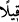

26. Söylenen, yalnızca «selâm, selâm»dır.
Ayetteki
(kîl) söz anlamındadır.
(selâmen selâmen) ise bu kîl
kelimesinden bedeldir. harfi ile yapılan istisnâ münkati olup, “ancak onlar orada
selâm, selâm sözünü işitirler” demektir. Yahut, “(Dünyada) ilk tattıkları ölüm dışında,
orada (âhirette) artık ölüm tatmazlar” (ed-Duhan 44/56) âyet-i kerîmesinde olduğu
gibi, selamdan başka kötü bir şey işitmeyi muhale bağlamak kabilindendir.
“Selam işitirler” demek; selamı orada yayarlar, selam verdikten sonra yine selam
verirler yahut hem selam veren hem de kendisine selam verilen kişiler, biri diğerinin
selamından başka kötü söz işitmezler, demektir.
Bu âyet-i kerîmede işâret edildiğine göre; Allah’a yakın önde kulların cennetleri,
içinde iskân edilenlerin mutluluğunu gölgeleyecek her türlü üzüntülerden uzak ve orayı
vatan edinenlere karşı her türlü kötü muâmeleden beridir. Bu cennetin halkı ancak Hak
ile konuşur ve yalnız Hak’tan dinlerler. Hak Teâlâ onlara, her türlü yakınlık ve
güzellikleri kapsayan ve her türlü noksanlık ve felaketlerden sâlim olan es-Selâm ism-i
şerifi ile tecellî eder. İyi bil ki, “Onlara merhametli Rabbden selâm vardır” (Yasîn
36/58) âyet-i kerîmesinde belirtildiği üzere, esenlik ve selâmın en güçlüsü Allah’ın
kulları üzerindeki selamıdır. Ondan sonra yüsek ruhların selâmı gelir.
Salihlerden biri şöyle anlatır: Benim şehid olmuş bir oğlum vardı. On iki halifenin
yedincisi olan Ömer b. Abdül-Aziz’in vefat ettiği geceye kadar oğlumu hiç rüyamda
görmedim. O gece oğlumu rüyamda gördüm ve ona “oğlum sen ölmüş değil misin?
dedim. “Hayır baba, ben şehid oldum. Allah katında diriyim, nimetlerinden
rızıklanıyorum” dedi. “Ne için geldin?” diye sordum. “Gök ehline nidâ edildi ve dendi
ki, «hiçbir nebi, sıddîk ve hiçbir şehid Ömer b. Abdülaziz’in cenazesine katılmazlık
etmesin, hepsi cenaze namazına hazır olsun.» Ben de bu sebeple cenaze namazında
bulunmak üzere geldim. Bu arada size de selam vereyim diye buraya geldim” dedi.
[195]. Alusî, Rûhu’l-meâni, XXVII, 134.
[196]. Müslim, îman 331.
[197]. Buhari, enbiya 7; Müslim, îman 379.
[198]. Tirmizi, Sıfatu’l-cenne 13; İbn Mâce, Zühd 34; Ahmed b. Hanbel el-Müsned, V,
347, 355.
[199]. Buhari, Cuma 1; Müslim, Cuma 19.
[200]. Müslim, Îman 331; Ahmed b. Hanbel, el-Müsned, I, 4.
[201]. Aclûnî, I, 151.